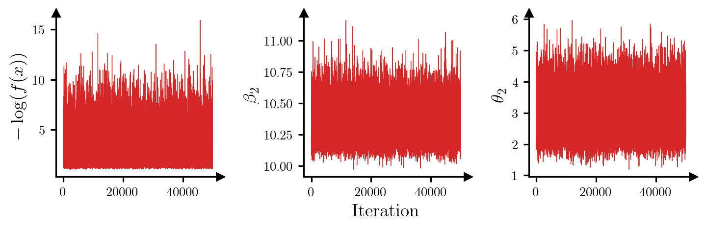
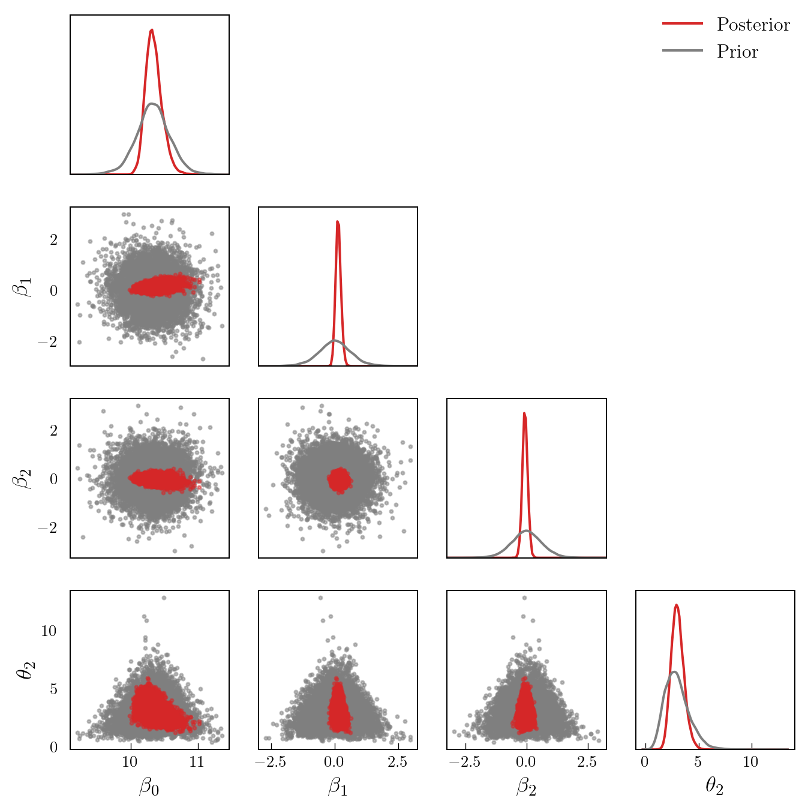
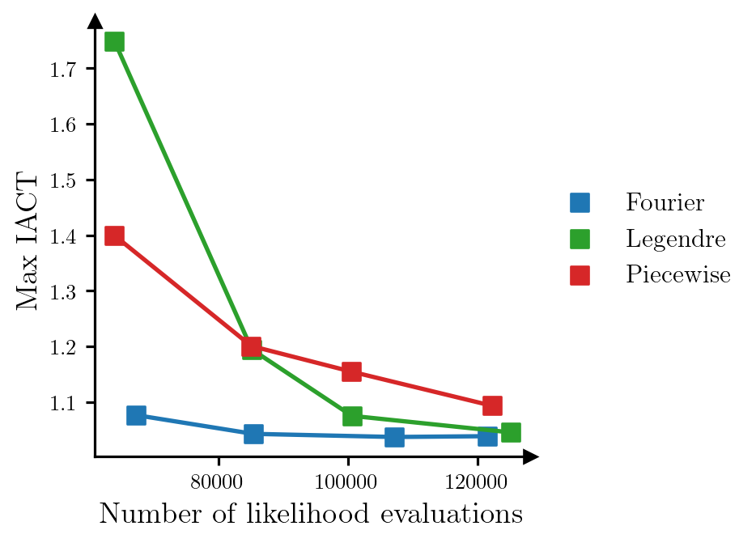

from matplotlib import pyplot as plt
import torch
import deep_tensor as dtShock Absorber
Here, we characterise the posterior distribution associated with a model of the time to failure for a shock absorber.
Problem Setup
We consider the problem of estimating the parameters of a model of the time to failure for a type of shock absorber. For further information on the model, see Dolgov et al. (2020) and the references therein.
We will use an accelerated failure time Weibull regression model, in which the density of the distance to failure of a given shock absorber is given by
\[ f(t | \theta_{1}, \theta_{2}) = \frac{\theta_{2}}{\theta_{1}}\left(\frac{t}{\theta_{1}}\right)^{\theta_{2}-1}\exp\left(-\left(\frac{t}{\theta_{1}}\right)^{\theta_{2}}\right), \]
where \(\theta_{1} >0\) is a scale parameter and \(\theta_{2} > 0\) is a shape parameter. The scale parameter, \(\theta_{1}\), depends on a set of \(D\) covariates, \(\boldsymbol{x} := [x_{1}, x_{2}, \dots, x_{D}]^{\top}\) (which are specific to each shock absorber) through the standard logarithmic link function:
\[ \theta_{1}(\boldsymbol{\beta}) = \exp\left(\beta_{0} + \sum_{i=1}^{D}\beta_{i}x_{i}\right), \]
where \(\boldsymbol{\beta} := [\beta_{0}, \beta_{1}, \dots, \beta_{D}]^{\top}\) denote a set of unknown parameters.
Likelihood Function
To estimate the unknown parameters, we use a dataset of 38 failure distances, \(\boldsymbol{t} := [t_{1}, t_{2}, \dots, t_{38}]^{\top}\), some of which are subject to right censoring. We assume that these measurements are independent, which means that the likelihood takes the form
\[ \mathcal{L}(\boldsymbol{\beta}, \theta_{2}; \boldsymbol{t}) = \prod_{i=1}^{38} P(t_{i} | \theta_{1}(\boldsymbol{\beta}), \theta_{2}), \]
where
\[ P(t_{i} | \theta_{1}, \theta_{2}) = \begin{cases} f(t_{i} | \theta_{1}, \theta_{2}), & \textrm{if } t_{i} \textrm{ is not censored}, \\ \exp\left(-\left(\frac{t_{i}}{\theta_{1}}\right)^{\theta_{2}}\right), & \textrm{if } t_{i} \textrm{ is censored}. \end{cases} \]
The value for the right censored case is the probability that the failure time is greater than or equal to the observed value.
Prior Density
As a prior, we use a normal-gamma density (see, e.g., Koch 2007), which takes the form
\[ \pi_{0}(\boldsymbol{\beta}, \theta_{2}) \propto \theta_{2}^{D/2+\alpha} \exp(-\gamma\theta_{2}) \prod_{i=0}^{D} \exp\left(-\frac{\theta_{2}(\beta_{i}-m_{i})^{2}}{2\sigma_{i}^{2}}\right), \]
where \(\gamma = 2.2932\), \(\alpha = 6.8757\), \(m_{0} = \log(30796)\), \(m_{1} = \cdots = m_{D} = 0\), \(\sigma_{0}^{2} = 0.1563\), and \(\sigma_{1} = \cdots = \sigma_{D} = 1\).
Note that, with this choice for prior, the marginal density for \(\theta_{2}\) is a gamma density; that is, \(\theta_{2} \sim \mathrm{Gamma}(\gamma, \alpha)\). The conditional density for each coefficient \(\beta_{i}\) is a normal density with a variance depending on \(\theta_{2}\); that is, \(\beta_{i} | \theta_{2} \sim \mathcal{N}(m_{i}, \sigma^{2}_{i}/\theta_{2})\).
Implementation in \(\texttt{deep\_tensor}\)
We begin by importing the relevant libraries and creating a tensor containing the failure distance data.
# Define failure distances (km)
failure_dists = torch.tensor([
6700, 6950, 7820, 8790, 9120,
9660, 9820, 11310, 11690, 11850,
11880, 12140, 12200, 12870, 13150,
13330, 13470, 14040, 14300, 17520,
17540, 17890, 18420, 18960, 18980,
19410, 20100, 20100, 20150, 20320,
20900, 22700, 23490, 26510, 27410,
27490, 27890, 28100
])
# Define whether or not each observation is right-censored
censored = torch.tensor([
False, True, True, True, False,
True, True, True, True, True,
True, True, False, True, False,
True, True, True, False, False,
True, True, True, True, True,
True, False, True, True, True,
False, False, True, False, True,
False, True, True
])Next, we will generate a set of (synthetic) covariates for each shock absorber. We will assume there are two covariates. Following Dolgov et al. (2020), we will generate these from a Gaussian distribution.
# Generate covariates
D = 2
xs = torch.randn((failure_dists.numel(), D))DIRT Construction
We now construct a DIRT approximation to the posterior density associated with the parameters.
Likelihood and Prior
We begin by defining functions which return the potential functions associated with the likelihood and prior for a set of samples.
Note
In this example, the likelihood can take on very small values, so we shift the computed log-likelihood values to avoid numerical underflow.
# Define prior coefficients
alpha = 6.8757
gamma = 2.2932
# Define means and standard deviations of beta coefficients
ms = torch.zeros((D+1,))
ms[0] = torch.tensor(30796).log()
sds = torch.ones((D+1,))
sds[0] = torch.tensor(0.1563).sqrt()
def negloglik(params: torch.Tensor) -> torch.Tensor:
bs, t2s = params[:, :-1], params[:, -1:]
# Compute theta_1 values
bxs = torch.sum(bs[:, 1:, None] * xs.T[None, :, :], dim=1)
t1s = torch.exp(bs[:, :1] + bxs)
# Add contribution of uncensored failure times
neglogliks = (
-torch.log(t2s / t1s[:, ~censored])
- (t2s - 1.0) * torch.log(failure_dists[~censored] / t1s[:, ~censored])
+ (failure_dists[~censored] / t1s[:, ~censored]) ** t2s
).sum(dim=1)
# Add contribution of censored failure times
neglogliks += (
(failure_dists[censored] / t1s[:, censored]) ** t2s
).sum(dim=1)
neglogliks -= 120.0 # To avoid underflow
return neglogliks
def neglogpri(params: torch.Tensor) -> torch.Tensor:
bs, t2s = params[:, :-1], params[:, -1:]
neglogpris = (
- (0.5*D + alpha) * t2s.log().flatten()
+ gamma * t2s.flatten()
+ 0.5 * torch.sum(t2s * (bs-ms)**2 / sds**2, dim=1)
)
return neglogprisPreconditioner
Next, we specify a preconditioner. In the absence of any other information, a suitable choice is a mapping between a Gaussian reference density and the prior.
In this case, the form of the prior means that, given a sample distributed according to the reference density, we can convert it to a sample distributed according to the prior by first transforming the element of the sample corresponding to \(\theta_{2}\) such that it has a Gamma density, then transforming the remaining elements of the sample such that they are normally distributed with variance dependent on \(\theta_{2}\).
Following Dolgov et al. (2020), we will construct the mapping such that each coefficient \(\beta_{i}\) is bounded within the interval \([m_{i}-3\sigma_{i}, m_{i}+3\sigma_{i}]\), and \(\theta_{2}\) is bounded within the interval \([0, 13]\).
from examples.shock import construct_preconditioner
# Define bounds for parameters
bounds = torch.zeros((D+2, 2))
bounds[:-1] = torch.vstack((ms - 3.0*sds, ms + 3.0*sds)).T
bounds[-1] = torch.tensor([1e-8, 13.0])
# Construct mapping from Gaussian reference to prior
dim = D + 2
reference = dt.GaussianReference()
preconditioner = construct_preconditioner(
reference, bounds,
alpha, gamma,
ms, sds, dim
)Approximation Bases
Next, we specify a set of polynomial interpolants to use when building the functional tensor trains constructed during the DIRT algorithm. In this case, we will use a piecewise linear polynomial with 30 elements as the interpolant in each dimension.
bases = dt.Lagrange1(num_elems=30)Bridging Densities
Next, we specify the intermediate densities that are approximated during the DIRT algorithm. In this case, as shown in Dolgov et al. (2020), the posterior is simple enough that it can be approximated directly with a high accuracy.
bridge = dt.SingleLayer()Note that because we are using a single bridging density, the DIRT algorithm reduces to the SIRT (squared inverse Rosenblatt transport) algorithm (see Cui and Dolgov 2022).
Tensor Train Options
Finally, we will modify some of the options used when building the functional tensor train as part of the construction of the DIRT. We will increase the maximum number of ALS iterations to two, and reduce the initial rank of the tensor cores that form the functional tensor train to 14.
tt_options = dt.TTOptions(max_als=2, init_rank=14)We now construct the DIRT object.
dirt = dt.DIRT(
negloglik=negloglik,
neglogpri=neglogpri,
preconditioner=preconditioner,
bases=bases,
bridge=bridge,
tt_options=tt_options
)[DIRT] Iter: 1 | Cum. Fevals: 2.00e+03 | Cum. Time: 5.14e-01 s
[ALS] Iter | Func Evals | Max Rank | Max Local Error | Mean Local Error | Max Debug Error | Mean Debug Error
[ALS] 1 | 16616 | 16 | 1.00000e+00 | 1.00000e+00 | 1.00000e+00 | 1.00000e+00
[ALS] 2 | 35712 | 18 | 1.00000e+00 | 3.34818e-01 | 1.23315e+11 | 9.86399e+10
[ALS] ALS complete.
[DIRT] DIRT construction complete.
[DIRT] • Layers: 1.
[DIRT] • Total function evaluations: 75,424.
[DIRT] • Total time: 2.5 s.
[DIRT] • DHell: 0.0963.Debiasing
We could use the DIRT object directly as an approximation to the target posterior. However, it is also possible to use the DIRT object to accelerate exact inference.
We will illustrate two possibilities to remove the bias from the inference results obtained using DIRT: using the DIRT density as part of a Markov chain Monte Carlo (MCMC) sampler, or as a proposal density for importance sampling.
MCMC Sampling
First, we will illustrate how to use the DIRT density as part of an MCMC sampler. The simplest sampler, which we demonstrate here, is an independence sampler using the DIRT density as a proposal density.
# Generate a set of samples from the DIRT approximation to the posterior
rs = reference.random(d=dirt.dim, n=50_000)
samples_dirt, potentials_dirt = dirt.eval_irt(rs)
# Run an independence MCMC sampler
potentials_true = negloglik(samples_dirt) + neglogpri(samples_dirt)
res = dt.run_independence_sampler(samples_dirt, potentials_dirt, potentials_true)
print(f"Acceptance rate: {res.acceptance_rate:.2f}")
print(f"Mean IACT: {res.iacts.mean():.2f}")
print(f"Max IACT: {res.iacts.max():.2f}")Acceptance rate: 0.86
Mean IACT: 1.33
Max IACT: 1.42For all parameters, the integrated autocorrelation time (IACT) is small, which suggests that the sampler is moving around the posterior efficiently. Figure 1 shows trace plots for the log-posterior density and selected parameters, which reinforces this idea.
Code
parameters = torch.hstack((res.potentials[:, None], res.xs[:, [0, 3]]))
ylabels = [r"$-\log(f(x))$", r"$\beta_{2}$", r"$\theta_{2}$"]
fig, axes = plt.subplots(1, 3, figsize=(7.5, 3))
for i, ax in enumerate(axes):
ax.plot(parameters[:, i], c="tab:red", lw=0.5)
ax.set_ylabel(ylabels[i])
ax.set_box_aspect(1)
add_arrows(ax)
axes[1].set_xlabel("Iteration")
plt.show()
Figure 2 shows a pair plot of prior and posterior samples.
Code
# Generate a set of posterior samples by thinning the chain
samples_post = res.xs[::5, :]
# Generate a set of samples from the prior
samples_prior = preconditioner.Q(rs[::5, :])
labels = [r"$\beta_{0}$", r"$\beta_{1}$", r"$\beta_{2}$", r"$\theta_{2}$"]
pairplot(
samples_post,
samples_prior,
labels=labels,
x_label="Posterior",
y_label="Prior"
)
Importance Sampling
As an alternative to MCMC, we can also apply importance sampling to reweight samples from the DIRT approximation to the posterior appropriately.
res = dt.run_importance_sampling(potentials_dirt, potentials_true)
ess_ratio = res.ess / potentials_dirt.numel()
print(f"ESS ratio: {ess_ratio:.2f}")ESS ratio: 0.94As expected, the ratio of the ESS (effective sample size) to the number of samples from the DIRT density is quite close to 1.
Comparison of Approximation Bases
Finally, we show a comparison of different polynomial bases that can be used when constructing the DIRT approximation to the target density. Figure 3 shows the relationship between the number of likelihood evaluations required to construct the DIRT approximation to the posterior, and the maximum IACT of the model parameters for an independence MCMC sampler that uses the DIRT approximation as the proposal density, when bases composed of Fourier, Legendre and piecewise linear polynomials are used. We modify the number of likelihood evaluations used to construct the DIRT approximation by changing the maximum order of the polynomials (Fourier and Legendre polynomials) or the number of linear functions used (piecewise linear polynomials). As before, we construct the DIRT in each case using a single layer. All other parameters are left at their default values.
Code
bases_dict = {
"Fourier": dt.Fourier,
"Legendre": dt.Legendre,
"Piecewise": dt.Lagrange1
}
args_dict = {
"Fourier": [15, 20, 25, 30],
"Legendre": [30, 40, 50, 60],
"Piecewise": [30, 40, 50, 60],
}
colours = {
"Fourier": "tab:blue",
"Legendre": "tab:green",
"Piecewise": "tab:red"
}
results = {name: {"iact": [], "num_eval": []} for name in bases_dict}
tt_options = dt.TTOptions(verbose=False)
dirt_options = dt.DIRTOptions(verbose=False)
for name in bases_dict:
for args in args_dict[name]:
bases = bases_dict[name](args)
dirt = dt.DIRT(
negloglik,
neglogpri,
preconditioner,
bases,
bridge=dt.SingleLayer(),
tt_options=tt_options,
dirt_options=dirt_options
)
# Run independence MCMC sampler
samples_dirt, potentials_dirt = dirt.eval_irt(rs)
potentials_true = negloglik(samples_dirt) + neglogpri(samples_dirt)
res = dt.run_independence_sampler(samples_dirt, potentials_dirt, potentials_true)
results[name]["iact"].append(res.iacts.max())
results[name]["num_eval"].append(dirt.num_eval)
fig, ax = plt.subplots(figsize=(6.5, 3.5))
for i, name in enumerate(results):
num_eval = results[name]["num_eval"]
iact = results[name]["iact"]
ax.plot(num_eval, iact, color=colours[name], zorder=i)
ax.scatter(num_eval, iact, c=colours[name], marker="s", label=name, zorder=i)
ax.set_xlabel("Number of likelihood evaluations")
ax.set_ylabel("Max IACT")
ax.set_box_aspect(1)
ax.legend(loc="center left", bbox_to_anchor=(1, 0.5))
add_arrows(ax)
plt.show()
The results suggest that, for this particular problem, the Fourier basis produces the most accurate approximation to the posterior for a given computational budget.
References
Cui, Tiangang, and Sergey Dolgov. 2022. “Deep Composition of Tensor-Trains Using Squared Inverse Rosenblatt Transports.” Foundations of Computational Mathematics 22 (6): 1863–1922. https://doi.org/10.1007/s10208-021-09537-5.
Dolgov, Sergey, Karim Anaya-Izquierdo, Colin Fox, and Robert Scheichl. 2020. “Approximation and Sampling of Multivariate Probability Distributions in the Tensor Train Decomposition.” Statistics and Computing 30: 603–25. https://doi.org/10.1007/s11222-019-09910-z.
Koch, Karl-Rudolf. 2007. Introduction to Bayesian Statistics. Springer. https://doi.org/10.1007/978-3-540-72726-2.